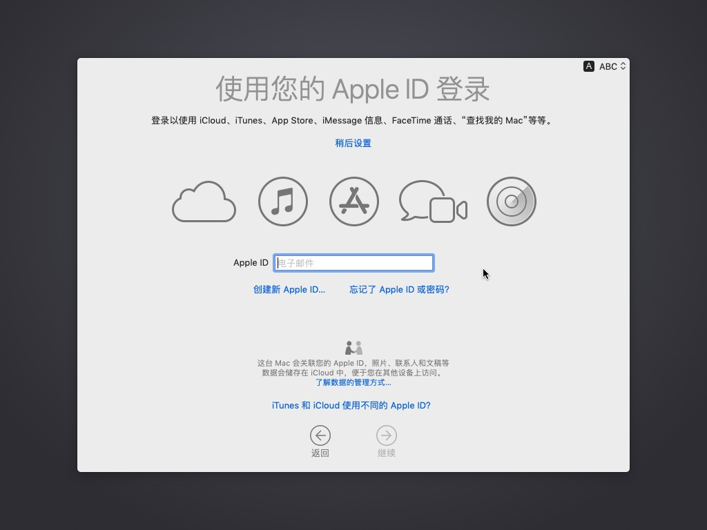

安装macOS系统
此处介绍在Win中用VMWare安装macOS操作系统。
前提
如前所述，已经做好了准备工作：
- Win中安装了VMWare
- 详见前面章节：Win中安装VMWare
- 且在VMWare创建了macOS的虚拟机
- 详见前面章节： 创建macOS虚拟机
- 已找到了合适版本的macOS的镜像文件（
ISO或cdr）：MacOS_Mojave_10.14.4_x5(www.w3h5.com推荐下载这个).iso- 详见前面章节：macOS的安装镜像
挂载iso镜像：
虚拟机设置->CD/DVD(SATA)->连接->使用ISO镜像文件->选择之前找到的：MacOS_Mojave_10.14.4_x5(www.w3h5.com推荐下载这个).iso

去启动虚拟机，安装macOS系统：

安装MacOS
macOS启动中：

进入：语言选择界面

移动键盘上下键，选择：简体中文
进入 macOS实用工具 页：
说明：此处需要先去（用磁盘工具）格式化硬盘，能让macOS识别出硬盘，才能继续安装。
所以点击磁盘工具：

可以看到磁盘列表。
默认选择的是磁盘是：VMWare Virtual SATA Hard Drive Media，状态是：未初始化

再点击抹掉，出现确认弹框：
要抹掉 VMWare Virtual SATA Hard Drive Media 吗？
确保选项是：
- 名称：
MacOS10.14- 随便起个名字即可
- 格式：
Mac OS 扩展（日志式） - 方案：
GUID分区图

正在抹掉 并创建

格式化完毕后，可以看到状态变成：PCI 内置物理宗卷 Mac OS 扩展（日志式）

点击左上角红色x按钮关闭退出窗口：
回来之前界面，选择：安装macOS
继续安装：
若要设置安装 macOS Mojave，请点按”继续“

若要继续安装软件，您必须同意软件许可协议中的条款
点击同意

出现弹框，点击同意
macOS Mojave 将安装在磁盘 "MacOS10.14"
点击安装
开始安装过程：

期间可能会重启，之后继续安装：

然后进入欢迎使用界面：
选择：中国大陆

进入：选择您的键盘
此处选择：
- 选择键盘布局：
简体中文 - 您喜欢哪些输入方式：
简体拼音

您如何连接？
选择电脑连接到互联网的方式：
- 此处选择：
- 本地网络（以太网） = 有线网络
您的互联网连接
继续到数据与隐私
传输信息到这台Mac
此处选：现在不传输任何信息

使用您的Apple ID登录
此处不用，所以点击：稍后设置

继续点击跳过
条款和条件，点击同意
我已经阅读并同意 软件许可协议
创建电脑账号
输入自己的用户名和密码：
快捷设置
选取您的外观
正在设置您的Mac

终于进入Mac桌面了：
去看看关于本机：


此处信息是：
macOS Mojave- 版本：
10.14.4
- 版本：
- Mac
- 处理器：
2.77GHz未知 - 内存：
3.02GBDRAM - 启动磁盘：
MacOS10.14 - 图形卡：显示器
3MB - 序列号：
VMfvNykazWi
- 处理器：
安装完成后
安装完成后，就是正常的使用macOS了。
此处关闭虚拟机后是：
点击：开启此虚拟机，即可启动macOS，进去登录页面：

登录后，再次进入系统：